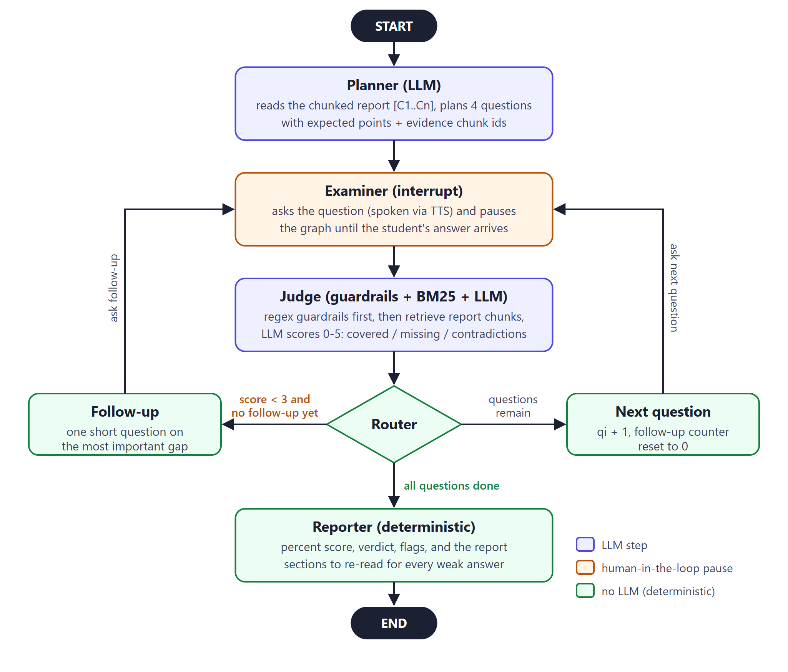

Practise your project viva
Upload your report. The examiner reads it, asks you about your own design choices, presses on an answer that is thin, and tells you which sections to revise before the real viva.
Or paste the text instead
Your report, as the examiner read it
Sections
Your report split into numbered sections. Answers are checked against these; sections marked evidence back a planned question.
Follow-up
How to improve
What you missed in your last practice viva, and the sections of your report to read again.
Nothing here yet. Finish one practice viva and your notes will appear here.
How VivaVerify works
- Upload. Your report is split into short numbered chunks and indexed with BM25 keyword search.
- Plan. A planner LLM reads the whole report and picks questions on the problem, a design choice, the implementation and the results, each linked to the chunks that hold the answer.
- Ask. The examiner speaks each question and pauses until you answer, by voice or keyboard.
- Judge and follow up. Rule-based guardrails run first; then a judge LLM compares your answer with your own report. A weak answer gets one follow-up on the most important missing point, and the follow-up is graded together with your first answer. During the viva you only see your score, so the feedback cannot give away the follow-up's answer; the full feedback comes with your result.
- Report. Your score is calculated by code, not by the LLM, and every weak answer points to the section you should re-read.

What happens to your data
- Your uploaded file is kept in server memory only and is never saved. The questions and grades generated from it may be kept on the server, so an identical request does not use AI quota again.
- Voice goes straight from your browser to the speech service using a short-lived key.